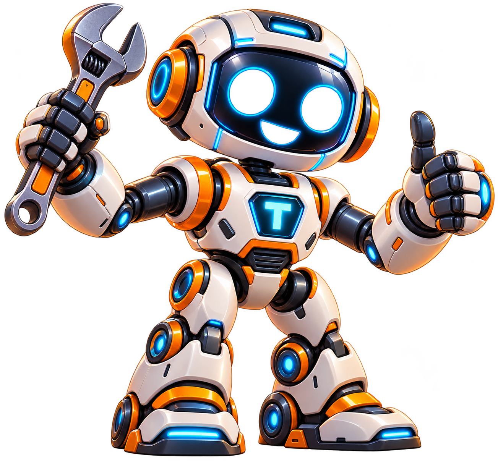

QUARTIER 01 • ATELIER DES INVENTEURS
🤖 Robot Factory
Un robot de livraison a besoin de toi. Observe, assemble, programme et teste tes solutions : ici, chaque expérience compte.
APPRENTI·E ROBOTICIEN·NE
ATELIER CENTRAL● SYSTÈME EN LIGNE

⚡
📦
Sélectionne une mission pour commencer.
Choisis une mission
01 / 05Cinq défis progressifs pour devenir inventeur.
Ton parcours
5 missions • manipulation et expérimentation
Mon carnet d'inventeur
Chaque mission réussie débloque une compétence et une étoile. Ta progression est enregistrée sur cet appareil.